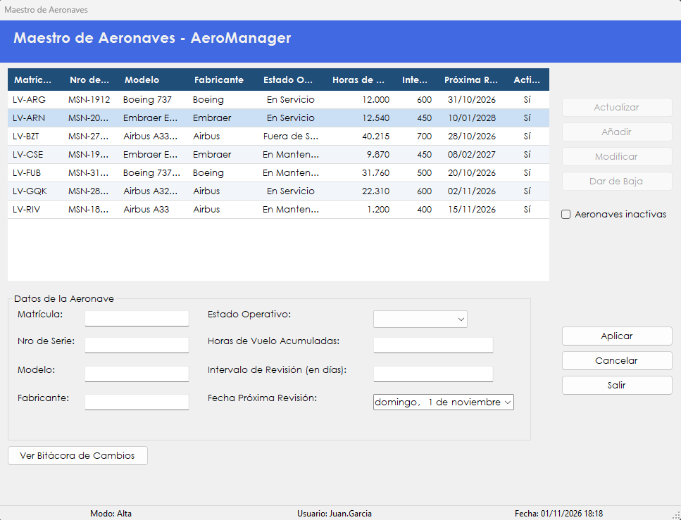

Administra la flota: permite registrar aeronaves, modificar sus datos, darlas de baja y reactivarlas.
Las aeronaves son la base tanto de la operación de vuelos como del mantenimiento. Este maestro reúne sus datos: matrícula, número de serie, modelo, fabricante, estado operativo, horas de vuelo acumuladas, intervalo de revisión y fecha de la próxima revisión.
Las aeronaves no se borran. Cuando una deja de operar se da de baja: sale de la lista activa, pero sus datos se conservan y se puede reactivar más adelante. Desde esta pantalla también se accede al historial de cambios de cada aeronave.
Desde el menú principal, en Maestros › Maestro - Aeronaves. La opción aparece si el rol del usuario incluye la patente correspondiente.

| Control | Para qué se usa |
|---|---|
| Grilla de aeronaves | Muestra Matrícula, Nro de Serie, Modelo, Fabricante, Estado Operativo, Horas de Vuelo, Intervalo (días), Próxima Revisión y Activo. Al hacer clic en un encabezado se ordena por esa columna. |
| Aeronaves inactivas | Tildada, la grilla muestra las aeronaves dadas de baja. Sin tildar, las activas. |
| Actualizar | Vuelve a cargar la grilla. |
| Añadir | Prepara los datos para registrar una aeronave nueva. |
| Modificar | Carga la aeronave seleccionada para editarla. |
| Dar de Baja | Da de baja la aeronave seleccionada. Con Aeronaves inactivas tildada, el botón dice Reactivar y la vuelve a activar. |
| Matrícula | Identifica a la aeronave. Se carga en el alta y después no se puede cambiar. |
| Nro de Serie, Modelo y Fabricante | Datos de identificación de la aeronave. |
| Estado Operativo | En Servicio, En Mantenimiento o Fuera de Servicio. |
| Horas de Vuelo Acumuladas | Total de horas voladas. Solo acepta dígitos. |
| Intervalo de Revisión (en días) | Días entre una revisión y la siguiente. Solo acepta dígitos. |
| Fecha Próxima Revisión | Día en que vence la próxima revisión. |
| Aplicar | Guarda el alta o la modificación en curso. |
| Cancelar | Descarta lo cargado. |
| Ver Bitácora de Cambios | Abre Auditoría de cambios. |
| Salir | Cierra la pantalla. También se activa con la tecla Esc. |
| Situación | Qué significa y qué hacer |
|---|---|
| "Debe seleccionar una aeronave de la grilla." | Hay que hacer clic en una fila antes de usar el botón. |
| "Error al recuperar las aeronaves:" seguido del motivo | No se pudo cargar la grilla. Después de los dos puntos se indica la causa técnica. |
| "Debe completar todos los datos de la aeronave." | Falta la matrícula, el número de serie, el modelo, el fabricante o el estado operativo. |
| "Las horas de vuelo acumuladas deben ser un número entero igual o mayor que cero." | El campo está vacío o el valor no es válido. |
| "El intervalo de revisión debe ser un número entero mayor que cero." | El campo está vacío, vale cero o el valor no es válido. |
| "La fecha de próxima revisión debe ser posterior a la fecha de hoy." | En el alta, hay que elegir una fecha a partir de mañana. |
| "Ya existe una aeronave registrada con esa matrícula." | La matrícula ya está cargada. Hay que revisarla. |
| "No se pudo registrar la aeronave." | El alta no se completó. Conviene volver a intentar. |
| "Aeronave registrada correctamente." | La aeronave ya figura en la flota. |
| "No se pudo modificar la aeronave. El registro pudo haber sido modificado por otro usuario." | Conviene presionar Cancelar, usar Actualizar y repetir el cambio. |
| "Aeronave modificada correctamente." | Los cambios quedaron guardados. |
| "Error al guardar la aeronave:" seguido del motivo | Los datos no se guardaron. Después de los dos puntos se indica la causa técnica. |
| "¿Confirma dar de baja la aeronave" seguido de la matrícula | Con Sí la aeronave pasa a la lista de inactivas. |
| "¿Confirma reactivar la aeronave" seguido de la matrícula | Con Sí la aeronave vuelve a la lista de activas. |
| "No se puede dar de baja una aeronave que tiene una orden de trabajo abierta." | Primero hay que completar esa orden. Se la puede ver en Generar orden de trabajo. |
| "No se pudo cambiar el estado de la aeronave." | La baja o la reactivación no se completó. Conviene actualizar la grilla y volver a intentar. |
| "Error al cambiar el estado de la aeronave:" seguido del motivo | La operación no se completó. Después de los dos puntos se indica la causa técnica. |
| "La operación se registró correctamente, pero no pudo asentarse en la Bitácora:" seguido del motivo | El cambio se guardó, pero el evento no quedó en la bitácora. Después de los dos puntos se muestra el motivo técnico. Conviene avisarle al administrador. |